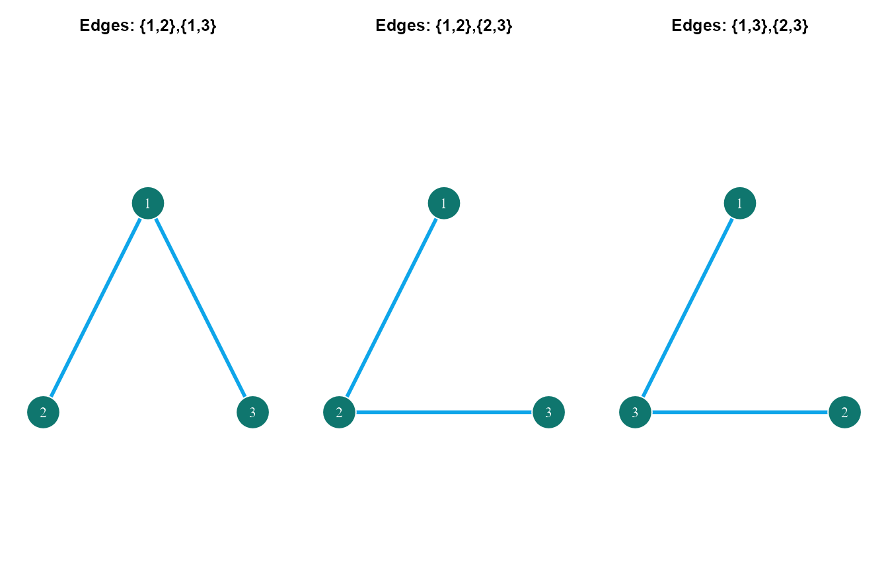
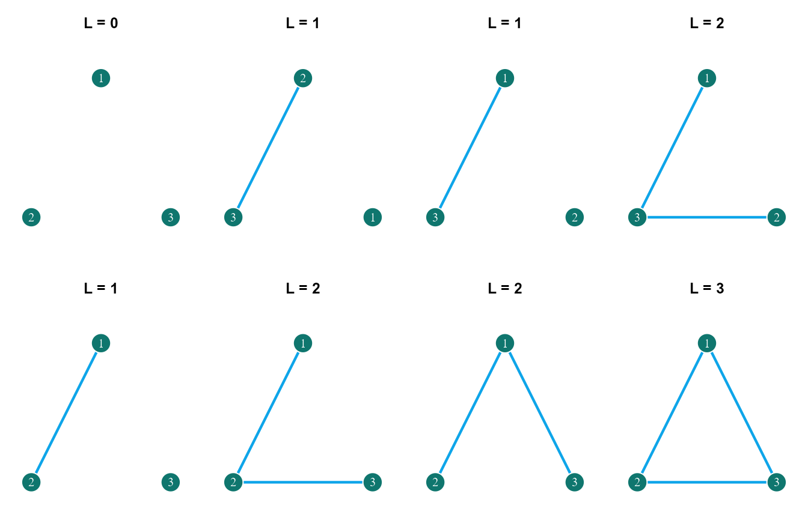
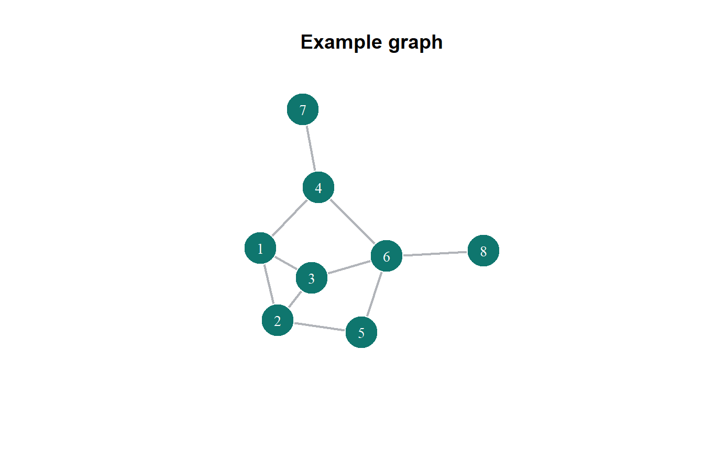
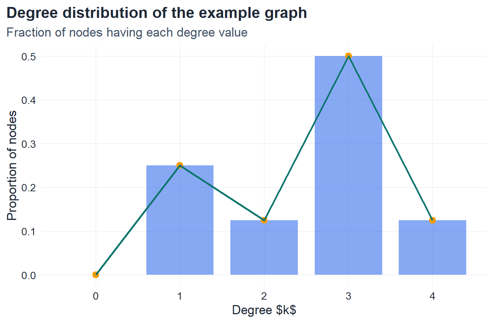
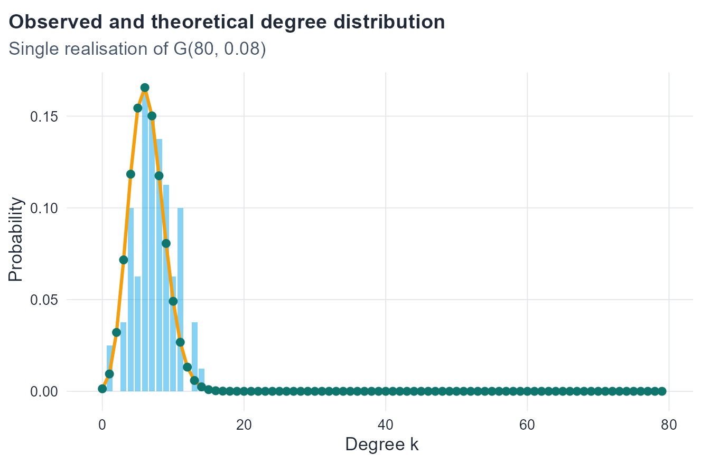
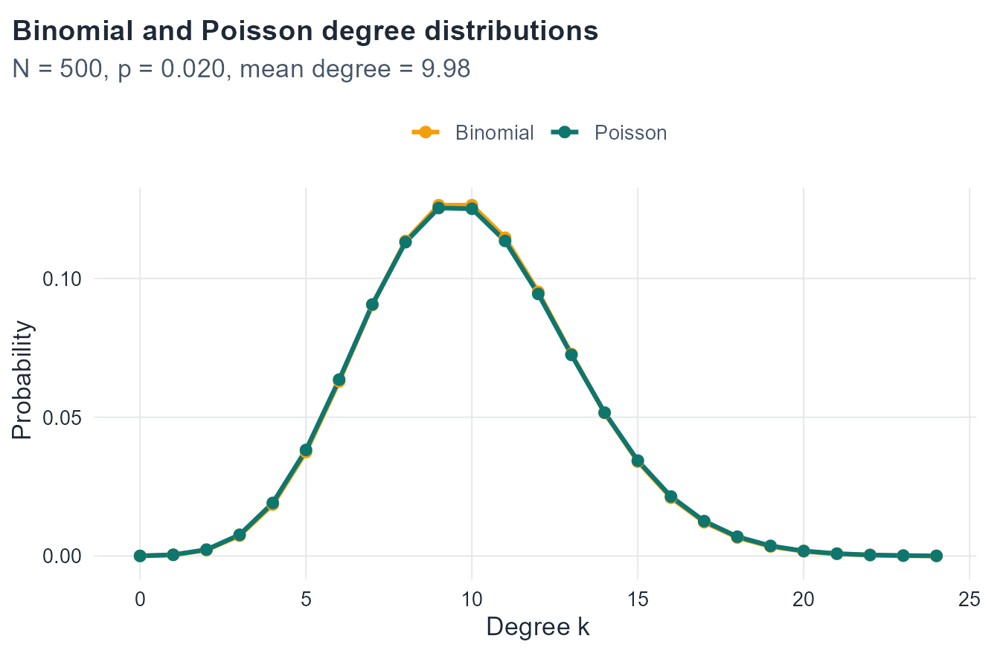
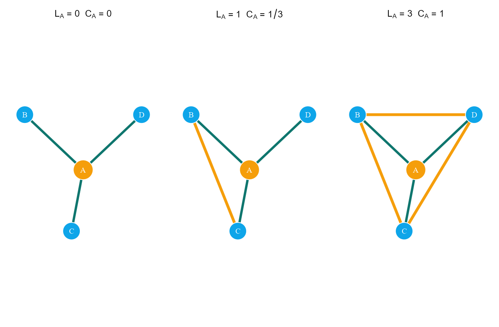
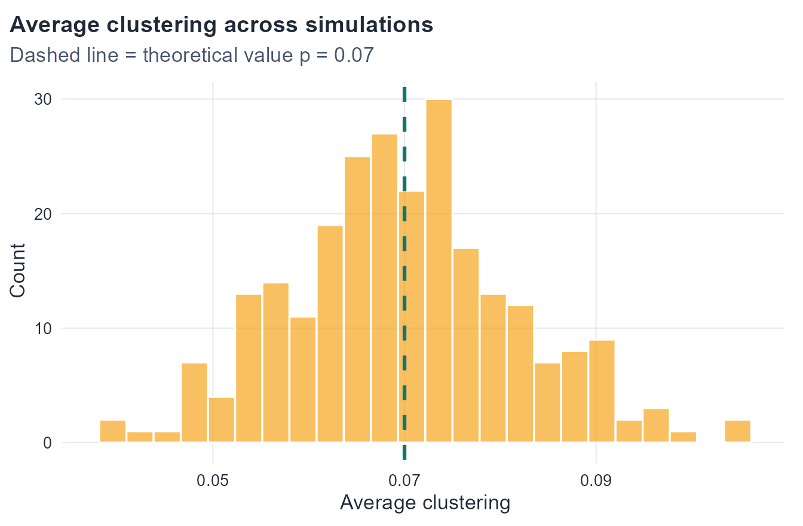
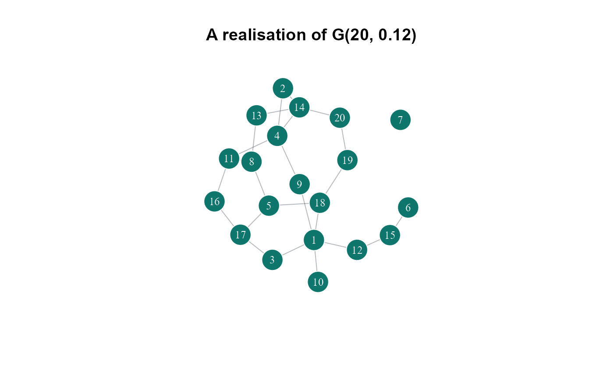

4 Random Graphs
When networks emerge from chance — the Erdős–Rényi model
4.1 Introduction
Random graphs are one of the most important starting points in network science. In ordinary graph theory, the usual starting point is a fixed graph: the nodes and links are already given, and the goal is to analyse the structure that is already there. In random graph theory, the viewpoint changes. Instead of starting from one fixed graph, the starting point is a rule for generating graphs.
This change is conceptually important. It means that the object of interest is not one network, but a whole collection of possible networks that could be produced by the same random mechanism. Some of these graphs are more likely than others, and many questions are no longer about one exact object. Instead, the natural questions become:
- What is the expected number of links?
- What is the expected average degree?
- What does the degree distribution typically look like?
- How likely is it that triangles or large connected pieces appear?
This is why random graphs are such a useful first model. They provide a clean probabilistic baseline and a simple reference point for later network models.
4.2 Learning goals
By the end of this chapter, it should be possible to:
- explain what a graph ensemble is
- distinguish between the models G(N,L) and G(N,p)
- compute expected average degree
- derive the degree distribution in G(N,p)
- explain why a Poisson approximation appears in sparse large graphs
- define clustering and interpret what it means
- connect the formulas to simulations in
R
4.3 A beginner-friendly motivation
A simple way to build intuition is to think about a classroom during the first week of a semester.
Suppose there are N students in a class. At the beginning, not everyone knows everyone else. Over the first few days, pairs of students may talk, exchange contact information, or work together in small activities. If a graph is drawn in which:
- each student is a node
- a link appears when two students become acquainted
then the resulting network depends on chance. Some pairs talk, some do not. Some classes become highly connected, while others remain sparse.
Now imagine that this process is repeated many times with different classes of the same size and under roughly similar conditions. The exact same acquaintance network should not be expected every time. But certain patterns may still be stable:
- the average number of acquaintances per student may be similar
- the probability of observing a student with degree k may follow a predictable distribution
- the network may be denser when the chance of interaction is higher
This is the core idea of a random graph model. The claim is not that real social interaction is random in every detail. Rather, randomness is used as a baseline model. If a simple random rule already explains some feature, that is informative. If a real network differs strongly from the random baseline, that is informative too.
NoteMain idea
A random graph is not a single graph. It is a probability model that generates many possible graphs.
4.4 Why the binomial distribution appears
Before defining the Erdős–Rényi models, it helps to recall the binomial distribution, because it appears naturally in this chapter.
If a random variable X counts the number of successes in n independent trials, where each trial succeeds with probability p, then
X \sim B(n,p)
and
P(X = k) = \binom{n}{k} p^k (1-p)^{n-k}.
Its mean is
\mathbb{E}[X] = np
and its variance is
\mathrm{Var}(X) = np(1-p).
This matters because in the model G(N,p), every possible edge is treated as an independent trial:
- success = the edge is present
- failure = the edge is absent
As a result, both the number of edges and the degree of a node can be described using binomial ideas.
4.5 The Erdős–Rényi models
There are two classical random graph models that are closely related but conceptually different.
The model G(N,L)
In the model G(N,L):
- the number of nodes is fixed and equal to N
- the number of links is fixed and equal to L
- all simple graphs with exactly those values are equally likely
The word simple means that self-loops and multiple edges are excluded.
If there are N nodes, then the total number of possible undirected edges is
K = \binom{N}{2} = \frac{N(N-1)}{2}.
To construct a graph with exactly L links, L edges must be chosen out of these K possible ones. Therefore, the number of distinct graphs in this ensemble is
\Omega(N,L) = \binom{K}{L}.
Since each such graph is equally likely, the probability of any one graph G is
P(G) = \frac{1}{\binom{K}{L}}.
Intuition for G(N,L)
This model keeps the density tightly controlled because the final graph always has exactly L links. The randomness lies only in where those links are placed.
So G(N,L) is useful when all graphs with the same size and the same number of links are being compared.
Example: the ensemble G(3,2)
Take three labeled nodes: 1, 2, and 3.
For N=3, the total number of possible undirected edges is
K = \binom{3}{2} = 3.
These three possible edges are
(1,2), \qquad (1,3), \qquad (2,3).
Now consider the model G(3,2). Since exactly two edges must be present, the number of possible labeled graphs is
\Omega(3,2) = \binom{3}{2} = 3.
So there are exactly three distinct labeled graphs in this ensemble, and each one has probability
P(G) = \frac{1}{3}.
This example makes the structure of G(N,L) very concrete:
- the node set is fixed
- the number of edges is fixed
- the only randomness is which L edges are chosen
The model G(N,p)
In the model G(N,p):
- the number of nodes is fixed and equal to N
- each possible edge is included independently with probability p
Again, the number of possible undirected edges is
K = \binom{N}{2}.
Now suppose a generated graph ends up with exactly L links. Then:
- each present edge contributes a factor of p
- each absent edge contributes a factor of (1-p)
Since there are L present edges and K-L absent edges, the probability of that graph is
P(G) = p^L (1-p)^{K-L}.
Intuition for G(N,p)
This model does not fix the total number of links in advance. Instead, every possible pair of nodes gets its own independent chance to be connected.
That makes G(N,p) especially natural for situations like:
- random failure of communication links
- random activation of pathways
- random acquaintance formation in a large group
- a baseline model where every pair has the same connection probability
Example: the ensemble G(3,p)
Again take three labeled nodes: 1, 2, and 3.
There are still exactly three possible edges:
(1,2), \qquad (1,3), \qquad (2,3).
In the model G(3,p), each of these three edges may be either:
- present, with probability p
- absent, with probability 1-p
Since each edge has two possibilities and the three edge decisions are independent, the total number of distinct labeled graphs is
2^3 = 8.
So the ensemble G(3,p) contains eight labeled graphs.

In this case, the number of edges is not fixed. Some of the eight graphs have:
- L=0 edges
- L=1 edge
- L=2 edges
- L=3 edges
What matters is that each possible edge is decided independently.
Probability table for G(3,p)
Since each graph is determined by the presence or absence of the three possible edges, its probability depends only on how many edges it contains.
| Graph | Present edges | Number of edges L | Probability |
|---|---|---|---|
| 1 | \varnothing | 0 | (1-p)^3 |
| 2 | (1,2) | 1 | p(1-p)^2 |
| 3 | (1,3) | 1 | p(1-p)^2 |
| 4 | (2,3) | 1 | p(1-p)^2 |
| 5 | (1,2), (1,3) | 2 | p^2(1-p) |
| 6 | (1,2), (2,3) | 2 | p^2(1-p) |
| 7 | (1,3), (2,3) | 2 | p^2(1-p) |
| 8 | (1,2), (1,3), (2,3) | 3 | p^3 |
This shows that in G(3,p) all eight labeled graphs are allowed, but they are not equally likely. Their probabilities depend on how many edges are present.
Comparing G(N,L) and G(N,p)
The two models are often confused at first, so it is worth separating them clearly.
- In G(N,L), the number of edges is fixed.
- In G(N,p), the number of edges is random.
- In G(N,L), all allowed graphs are equally likely.
- In G(N,p), graphs with the same number of links have the same probability, but graphs with different numbers of links generally do not.
ImportantConceptual difference
The model G(N,L) is a uniform choice among graphs with exactly L edges.
The model G(N,p) is an independent decision process for each possible edge.
4.6 Average degree
Average degree is one of the first global quantities used to summarize a network. It gives a single number that describes, on average, how many neighbors each node has.
If a graph has N nodes and L links, then the average degree is
\bar{k} = \frac{1}{N}\sum_{i=1}^{N} k_i,
where k_i is the degree of node i.
Using the handshake identity,
\sum_{i=1}^{N} k_i = 2L,
it follows that
\bar{k} = \frac{2L}{N}.
This formula is fundamental. It says that the average degree is determined entirely by the number of nodes and the number of links.
A useful interpretation is the following:
- each link contributes 1 to the degree of one endpoint
- and also contributes 1 to the degree of the other endpoint
- so each link contributes a total of 2 to the sum of all node degrees
That is why the numerator is 2L rather than L.
A quick numerical example
Suppose a graph has
N = 10 \qquad \text{and} \qquad L = 15.
Then the average degree is
\bar{k} = \frac{2L}{N} = \frac{2\times 15}{10} = 3.
This does not mean that every node has degree 3. It only means that the average over all node degrees is 3.
For example, one graph could have degrees
(1,2,2,3,3,3,4,4,4,4),
whose average is 3. Another graph with a very different structure might still have the same average degree. So average degree is useful, but it does not capture the full shape of the degree distribution.
Why average degree matters in random graphs
In a fixed graph, \bar{k} is a property of that one graph. In a random graph model, the situation is different because the graph itself is random. That means the number of links may vary from one realization to another, and therefore the average degree may also vary.
So in a random graph ensemble, the natural quantity to study is the expected average degree,
\mathbb{E}[\bar{k}].
This is the average value of \bar{k} over all graphs generated by the model.
Starting from
\bar{k} = \frac{2L}{N},
and taking expectation on both sides gives
\mathbb{E}[\bar{k}] = \mathbb{E}\left[\frac{2L}{N}\right].
Since N is fixed in both Erdős–Rényi models, the constant \frac{2}{N} can be taken outside the expectation:
\mathbb{E}[\bar{k}] = \frac{2\,\mathbb{E}[L]}{N}.
This relation is extremely useful. It says that once the expected number of links is known, the expected average degree follows immediately.
NoteKey relation
For any random graph ensemble with fixed number of nodes N,
\mathbb{E}[\bar{k}] = \frac{2\,\mathbb{E}[L]}{N}.
So the problem of expected average degree reduces to the problem of expected number of links.
Average degree in G(N,L)
In the model G(N,L), the number of links is fixed from the beginning. Every graph in the ensemble has exactly L links.
That means there is no randomness in the value of L itself:
\mathbb{E}[L] = L.
Substituting this into the general relation gives
\mathbb{E}[\bar{k}] = \frac{2L}{N}.
So in G(N,L), the average degree is not only expected to equal \frac{2L}{N}; in fact every graph in the ensemble has that same average degree.
This is an important distinction. The detailed arrangement of edges changes from one graph to another, but the total number of edges does not. Therefore, the average degree is fixed across the whole ensemble.
Interpretation in G(N,L)
The model G(N,L) allows randomness in structure, but not in density.
- which nodes are connected is random
- how many total links exist is fixed
- therefore the average degree is fixed
For example, in G(6,4) the average degree is always
\bar{k} = \frac{2\times 4}{6} = \frac{8}{6} = \frac{4}{3}.
Different realizations may have very different shapes, but all of them must share this same average degree.
Average degree in G(N,p)
The model G(N,p) is different because the total number of links is no longer fixed in advance.
There are
K = \binom{N}{2}
possible undirected edges, and each one is included independently with probability p.
So the total number of links L is a binomial random variable:
L \sim B(K,p).
This immediately gives
\mathbb{E}[L] = pK.
Substituting into the general relation,
\mathbb{E}[\bar{k}] = \frac{2\,\mathbb{E}[L]}{N} = \frac{2pK}{N}.
Now replace K by \binom{N}{2}:
\mathbb{E}[\bar{k}] = \frac{2p}{N}\binom{N}{2}.
Since
\binom{N}{2} = \frac{N(N-1)}{2},
this simplifies to
\mathbb{E}[\bar{k}] = \frac{2p}{N}\cdot \frac{N(N-1)}{2} = p(N-1).
So the expected average degree in G(N,p) is
\mathbb{E}[\bar{k}] = p(N-1).
A second way to understand the formula
The formula
\mathbb{E}[\bar{k}] = p(N-1)
can also be understood directly, without first going through \mathbb{E}[L].
Take one node. It has N-1 possible neighbors. For each of those possible neighbors, an edge is present with probability p.
So the expected number of neighbors of that node is simply
(N-1)\times p = p(N-1).
Because all nodes are statistically equivalent in the Erdős–Rényi model, this is also the expected average degree of the whole graph.
This second interpretation is very useful because it makes the formula intuitive:
- N-1 = number of possible neighbors
- p = chance that each possible link exists
- expected degree = “number of opportunities” times “probability of success”
A quick numerical example in G(N,p)
Suppose
N = 50 \qquad \text{and} \qquad p = 0.10.
Then
\mathbb{E}[\bar{k}] = p(N-1) = 0.10 \times 49 = 4.9.
So a typical graph in this ensemble should have an average degree close to 4.9, although the exact value will vary from one realization to another.
This illustrates an important contrast with G(N,L):
- in G(N,L) the average degree is exactly fixed
- in G(N,p) the average degree fluctuates, but its expected value is fixed
Dense and sparse regimes
The formula
\mathbb{E}[\bar{k}] = p(N-1)
also helps explain how the graph changes when N or p changes.
If p is fixed and N increases, then the expected average degree grows roughly linearly with N. In that case the graph becomes denser as the system grows.
On the other hand, many real network settings are better modeled by keeping the expected degree moderate even when N becomes large. To do that, p must decrease as N grows. This is exactly the sparse regime that later leads to the Poisson approximation for the degree distribution.
So the average degree is not just a descriptive quantity. It also helps identify whether the graph is sparse or dense.
Comparing the two models
The formulas for the two Erdős–Rényi models are:
\mathbb{E}[\bar{k}] = \frac{2L}{N} \qquad \text{for } G(N,L),
and
\mathbb{E}[\bar{k}] = p(N-1) \qquad \text{for } G(N,p).
These two expressions describe the same idea in two different parameterizations:
- in G(N,L) the model is controlled by the number of links L
- in G(N,p) the model is controlled by the edge probability p
They are closely related. In fact, if a graph from G(N,p) has expected number of links
\mathbb{E}[L] = p\binom{N}{2},
then it is natural to compare it with a graph from G(N,L) using approximately that same value of L.
Summary
The average degree is one of the simplest and most useful global quantities in random graph theory.
The main points are:
- in any graph with N nodes and L links, \bar{k} = \frac{2L}{N}
- in a random graph ensemble, \mathbb{E}[\bar{k}] = \frac{2\,\mathbb{E}[L]}{N}
- in G(N,L), \mathbb{E}[\bar{k}] = \frac{2L}{N}
- in G(N,p), \mathbb{E}[\bar{k}] = p(N-1)
So the expected average degree gives a first measure of how densely connected a random graph is, and it provides a natural bridge between the combinatorial description of the model and its probabilistic behavior.
4.7 Degree distribution
The degree distribution describes how node degrees are distributed across a graph. In this chapter, the important point is not the definition of degree itself, but how a random graph model gives rise to a distribution of degrees across nodes.
A useful way to introduce this idea is to move in three steps:
- start from one concrete graph
- record the degree of each node
- transform those degree values into a distribution
A small example
Consider the following graph.

For this graph, the degree of each node is:
| Node | Degree |
|---|---|
| 1 | 3 |
| 2 | 3 |
| 3 | 3 |
| 4 | 3 |
| 5 | 2 |
| 6 | 4 |
| 7 | 1 |
| 8 | 1 |
This table contains node-level information. It tells the degree of each specific node, but it does not yet summarize how the degree values are distributed across the graph.
From node degrees to degree counts
The next step is to count how many nodes share each degree value.
| Degree k | Number of nodes N_k | Proportion p_k = \frac{N_k}{N} |
|---|---|---|
| 0 | 0 | 0 |
| 1 | 2 | 0.25 |
| 2 | 1 | 0.125 |
| 3 | 4 | 0.50 |
| 4 | 1 | 0.125 |
This table is the key transition from node-level data to a graph-level summary.
- the first column gives the degree value k
- the second column gives the number of nodes having that degree
- the third column gives the fraction of nodes having that degree
If the graph has N nodes in total and N_k nodes of degree k, then the empirical degree distribution is
p_k = \frac{N_k}{N}.
So p_k is the proportion of nodes whose degree is exactly k.
Plotting the degree distribution
The same information can be shown visually.

This plot shows the degree distribution in its most direct form:
- the horizontal axis gives the degree value k
- the vertical axis gives the proportion of nodes with that degree
The distinction between two ideas is now clear:
- the degree table records the degree of each node
- the degree distribution records how common each degree value is in the graph
Degree distribution in the random graph model G(N,p)
Now move from one fixed graph to the random graph model G(N,p).
Take one node. It has N-1 possible neighbors. For each possible neighbor, an edge is present with probability p and absent with probability 1-p. Because these edge decisions are independent, the degree of that node is the number of successes in N-1 Bernoulli trials. Therefore,
k \sim B(N-1,p).
Hence the probability that a node has degree exactly k is
P(k) = \binom{N-1}{k} p^k (1-p)^{N-1-k}.
This is the degree distribution of the Erdős–Rényi model G(N,p).
Interpreting the formula
Each factor in the formula has a clear meaning.
To obtain degree k for a chosen node:
- exactly k of the N-1 possible edges must be present
- the remaining N-1-k edges must be absent
- there are \binom{N-1}{k} different ways to choose which k neighbors are connected
Therefore,
P(k) = \binom{N-1}{k} p^k (1-p)^{N-1-k}.
The three parts of this expression play different roles:
- \binom{N-1}{k} counts the possible choices of the k neighbors
- p^k gives the probability that those k edges are present
- (1-p)^{N-1-k} gives the probability that the remaining edges are absent
The expected value of this distribution is
\mathbb{E}[k] = p(N-1),
which agrees with the expected average degree derived earlier.
Comparing one realization with the theoretical distribution
The formula above describes the degree distribution predicted by the model. A single simulated graph from G(N,p) will fluctuate around that prediction.
Show code
n <- 80
p <- 0.08
g <- sample_gnp(n = n, p = p, directed = FALSE, loops = FALSE)
obs_deg <- degree(g)
obs_tbl <- tibble(k = obs_deg) |>
count(k, name = "observed") |>
complete(k = 0:(n - 1), fill = list(observed = 0)) |>
mutate(observed_prob = observed / sum(observed))
theory_tbl <- tibble(k = 0:(n - 1)) |>
mutate(theory_prob = dbinom(k, size = n - 1, prob = p))
plot_tbl <- left_join(obs_tbl, theory_tbl, by = "k")
ggplot(plot_tbl, aes(x = k)) +
geom_col(aes(y = observed_prob), fill = course_cols$blue, alpha = 0.5, width = 0.82) +
geom_line(aes(y = theory_prob), color = course_cols$gold, linewidth = 1.1) +
geom_point(aes(y = theory_prob), color = course_cols$teal, size = 2.2) +
labs(
title = "Observed and theoretical degree distribution",
subtitle = sprintf("Single realization of G(%d, %.2f)", n, p),
x = "Degree $k$",
y = "Probability"
)
The bars show the empirical degree distribution of one generated graph. The line and points show the theoretical distribution
P(k) = \binom{N-1}{k} p^k (1-p)^{N-1-k}.
The two are not expected to coincide perfectly in one realization. The figure shows how the observed degree frequencies of a random graph relate to the probability law defined by the model.
ImportantSummary
In this chapter, the degree distribution can be read at three connected levels:
- a graph has nodes with different degree values
- those degree values can be summarized by the empirical distribution p_k = \frac{N_k}{N}
- in the model G(N,p), the degree of a node follows the binomial law P(k) = \binom{N-1}{k} p^k (1-p)^{N-1-k}
4.8 Poisson approximation in sparse large graphs
The exact binomial formula is correct, but in many network settings the focus is on large graphs that are relatively sparse.
A graph is called sparse when the number of links grows much more slowly than the maximum possible number of links. In the Erdős–Rényi setting, a common sparse regime is:
- N is large
- p is small
- the mean degree remains finite
Let
\lambda = p(N-1).
If N is large and p is small in such a way that \lambda stays finite, then the binomial degree distribution is well approximated by a Poisson distribution:
P(k) \approx e^{-\lambda}\frac{\lambda^k}{k!}.
Why this approximation appears
This approximation reflects a common probabilistic pattern:
- each individual edge is unlikely
- there are many possible edges
- the total number of successes remains moderate
That is exactly the setting in which Poisson limits naturally appear.
This is an important modeling lesson. The Poisson distribution is not introduced here as a completely different idea. It appears as a limit of the binomial degree distribution in the sparse large-N regime.
TipInterpretation
In a large sparse Erdős–Rényi graph, most nodes have relatively small degree, and the degree distribution becomes sharply concentrated around a finite mean.
Class example: binomial distribution and Poisson approximation
Show code
n <- 500
p <- 0.02
lambda <- p * (n - 1)
k_vals <- 0:24
compare_tbl <- tibble(
k = k_vals,
binomial = dbinom(k_vals, size = n - 1, prob = p),
poisson = dpois(k_vals, lambda = lambda)
) |>
pivot_longer(cols = c(binomial, poisson), names_to = "distribution", values_to = "probability") |>
mutate(distribution = recode(distribution, binomial = "Binomial", poisson = "Poisson"))
ggplot(compare_tbl, aes(x = k, y = probability, color = distribution)) +
geom_line(linewidth = 1.1) +
geom_point(size = 2.2) +
scale_color_manual(values = c("Binomial" = course_cols$gold, "Poisson" = course_cols$teal)) +
labs(
title = "Binomial and Poisson degree distributions",
subtitle = sprintf("n = %d, p = %.3f, mean degree = %.2f", n, p, lambda),
x = "Degree $k$",
y = "Probability",
color = NULL
)
4.9 Clustering coefficient
The clustering coefficient measures how strongly the neighbors of a node are connected to one another. In other words, once a node is chosen, clustering asks whether its neighbors also tend to be neighbors of each other.
This idea is important because two graphs can have similar size, similar average degree, and even similar degree distributions, while still differing strongly in how much local triangle structure they contain. The clustering coefficient is one of the main quantities used to capture that local structure.
Local clustering coefficient
Suppose node i has degree k_i. Then node i has exactly k_i neighbors.
Among those k_i neighbors, the maximum possible number of edges is
L_i^{\max} = \binom{k_i}{2} = \frac{k_i(k_i-1)}{2}.
If the actual number of edges among those neighbors is L_i, then the local clustering coefficient of node i is
C_i = \frac{L_i}{L_i^{\max}} = \frac{2L_i}{k_i(k_i-1)}.
This formula compares:
- the number of neighbor-neighbor edges that actually exist
- the maximum number of neighbor-neighbor edges that could exist
So C_i is always between 0 and 1:
- C_i = 0 means none of the neighbors of i are connected to each other
- C_i = 1 means all neighbors of i are mutually connected
- intermediate values indicate partial local connectivity
A fixed node with three different neighborhood structures
To see how this works clearly, keep the same central node A and the same three neighbors B, C, and D, and only change the edges among the neighbors.
In all three examples below:
- the focal node is A
- the neighbors of A are B, C, and D
- therefore k_A = 3
- the maximum possible number of edges among the neighbors is
L_A^{\max} = \binom{3}{2} = 3
So the only question is: how many of the three possible neighbor-neighbor edges actually exist?

In these figures:
- the dark green edges connect the focal node A to its neighbors
- the light green edges connect neighbors to each other
- only the light green edges count in the value of L_A
Example 1
In the first graph, node A has neighbors B, C, and D, but none of those neighbors are connected to each other.
So
L_A = 0 \qquad \text{and} \qquad L_A^{\max} = 3.
Therefore,
C_A = \frac{L_A}{L_A^{\max}} = \frac{0}{3} = 0.
This is the smallest possible clustering value. The neighbors of A form no local triangle structure at all.
Example 2
In the second graph, the same three neighbors are present, but now one edge exists among them, namely between B and C.
So
L_A = 1 \qquad \text{and} \qquad L_A^{\max} = 3.
Therefore,
C_A = \frac{L_A}{L_A^{\max}} = \frac{1}{3}.
This means that only one-third of the possible neighbor-neighbor edges are present.
Example 3
In the third graph, all three neighbor-neighbor edges are present:
(B,C), \qquad (B,D), \qquad (C,D).
So
L_A = 3 \qquad \text{and} \qquad L_A^{\max} = 3.
Therefore,
C_A = \frac{L_A}{L_A^{\max}} = \frac{3}{3} = 1.
This is the largest possible clustering value. The neighbors of A form a complete subgraph, so the local neighborhood is maximally clustered.
Summary table for the three examples
| Example | Degree of focal node k_A | Maximum possible neighbor-neighbor edges L_A^{\max} | Actual neighbor-neighbor edges L_A | Clustering coefficient C_A |
|---|---|---|---|---|
| 1 | 3 | 3 | 0 | 0 |
| 2 | 3 | 3 | 1 | \frac{1}{3} |
| 3 | 3 | 3 | 3 | 1 |
This table makes the logic of the formula very explicit. The degree stays the same in all three examples. What changes is only the number of links among the neighbors.
What clustering is really measuring
These examples show an important point:
- degree counts how many neighbors a node has
- clustering measures how tightly those neighbors are connected to each other
So two nodes can have the same degree but very different clustering coefficients.
For example, in all three graphs above, node A has degree 3. But its clustering coefficient changes from
0 \quad \text{to} \quad \frac{1}{3} \quad \text{to} \quad 1.
So clustering reveals local structural information that degree alone cannot capture.
Average clustering coefficient of a graph
Once the local clustering coefficient has been defined for every node, the average clustering coefficient of the graph is
\bar{C} = \frac{1}{N}\sum_{i=1}^{N} C_i.
This quantity measures the overall tendency of the graph to form locally connected neighborhoods.
It should be interpreted carefully:
- C_i is a node-level quantity
- \bar{C} is a graph-level average
The local quantity tells how clustered one neighborhood is. The average quantity summarizes the graph as a whole.
Why clustering is important in network science
Clustering is especially important because many real networks are rich in triangle structure.
In social networks, for example, if one person knows two others, there is often an elevated chance that those two people also know each other. This kind of local closure is one of the characteristic patterns of social graphs.
Random graphs of the Erdős–Rényi type behave differently. Since edges are placed independently, there is no special mechanism that encourages triangle closure beyond the baseline edge probability itself.
That is why clustering becomes an important comparison point between random graphs and real-world networks.
Expected clustering in G(N,p)
Now consider the model G(N,p).
Suppose node i has some set of neighbors. To compute its clustering coefficient, the question is whether pairs among those neighbors are connected.
In the Erdős–Rényi model, every possible edge appears independently with probability p. Therefore, once two neighbors of node i are chosen, the probability that they are connected is simply p.
So the expected fraction of connected neighbor-neighbor pairs is
\mathbb{E}[C_i] = p.
As a consequence, the expected average clustering coefficient is also
\mathbb{E}[\bar{C}] = p.
This is a very simple and very important result.
NoteKey result for Erdős–Rényi graphs
In the model G(N,p), the expected clustering coefficient is
\mathbb{E}[C] = p.
So clustering is directly controlled by the edge probability.
Why this result matters
This formula shows that Erdős–Rényi graphs usually have low clustering when p is small.
That is one of the main reasons why Erdős–Rényi graphs are useful as a baseline but often unrealistic as full models of social networks:
- they capture random edge formation well
- but they do not create unusually strong local triangle closure
So if a real network has clustering much larger than p, that indicates structure beyond independent random linking.
Numerical check by simulation
The theoretical prediction in G(N,p) is
\mathbb{E}[\bar{C}] = p.
This can be checked numerically by simulating many graphs and computing the average clustering coefficient in each one.
Show code
n <- 100
p <- 0.07
reps <- 250
sim_tbl <- map_dfr(seq_len(reps), function(i) {
g <- sample_gnp(n = n, p = p, directed = FALSE, loops = FALSE)
tibble(
sim = i,
avg_degree = mean(degree(g)),
avg_clustering = transitivity(g, type = "average")
)
})
summary_tbl <- tibble(
quantity = c("Average degree", "Average clustering"),
empirical_mean = c(mean(sim_tbl$avg_degree), mean(sim_tbl$avg_clustering)),
theoretical_value = c(p * (n - 1), p)
)
summary_tblShow code
ggplot(sim_tbl, aes(x = avg_clustering)) +
geom_histogram(bins = 24, fill = course_cols$gold, alpha = 0.65, color = "white") +
geom_vline(xintercept = p, color = course_cols$teal, linewidth = 1.1, linetype = 2) +
labs(
title = "Average clustering across simulations",
subtitle = sprintf("Dashed line = theoretical value p = %.2f", p),
x = "Average clustering",
y = "Count"
)
The histogram shows how the observed average clustering varies across realizations of the model, while the dashed line marks the theoretical value p.
Summary
The clustering coefficient adds information that degree alone cannot provide.
The main points are:
- for a node i with degree k_i, the maximum number of possible edges among its neighbors is \binom{k_i}{2}
- the local clustering coefficient is C_i = \frac{2L_i}{k_i(k_i-1)}
- it measures how strongly the neighbors of a node are connected to one another
- the graph-level average is \bar{C} = \frac{1}{N}\sum_{i=1}^{N} C_i
- in the Erdős–Rényi model G(N,p), \mathbb{E}[C] = p
So clustering is a local structural measure that becomes especially useful when comparing random graphs with more realistic network models.
4.10 Core formulas to remember
ImportantSummary
For Erdős–Rényi random graphs:
Number of possible undirected edges: K = \binom{N}{2}
Probability of a graph in G(N,L): P(G) = \frac{1}{\binom{K}{L}}
Probability of a graph with L links in G(N,p): P(G) = p^L(1-p)^{K-L}
Expected average degree in G(N,p): \mathbb{E}[\bar{k}] = p(N-1)
Degree distribution in G(N,p): P(k) = \binom{N-1}{k}p^k(1-p)^{N-1-k}
Poisson approximation in the sparse regime: P(k) \approx e^{-\lambda}\frac{\lambda^k}{k!}, \qquad \lambda = p(N-1)
Expected clustering in G(N,p): \mathbb{E}[C] = p
4.11 Class example: generate and plot a random graph
Show code
n <- 20
p <- 0.12
g_er <- sample_gnp(n = n, p = p, directed = FALSE, loops = FALSE)
plot(
g_er,
layout = layout_with_fr(g_er),
vertex.size = 22,
vertex.color = course_cols$teal,
vertex.frame.color = "white",
vertex.label.color = "white",
edge.color = scales::alpha(course_cols$ink, 0.32),
vertex.label.cex = 0.8,
main = sprintf("A realization of G(%d, %.2f)", n, p)
)
4.12 Interactive explorer
This section is interactive in the HTML version. Use the tabs and animation slider to see how the degree distribution changes as p changes.
Explore the effect of p
N = 30
N = 60
N = 100
As p increases:
- the center of the distribution moves to the right
- the expected degree increases because \mathbb{E}[k] = p(N-1)
- higher-degree values become more likely
- for larger N, the same value of p produces a larger expected degree
4.13 In-class questions
- Why is a random graph a model rather than a single graph?
- What is the main conceptual difference between G(N,L) and G(N,p)?
- Why does the total number of edges follow a binomial distribution in G(N,p)?
- Why does the degree of a single node also follow a binomial distribution?
- What does sparse mean in this chapter?
- Why does the Poisson approximation appear in sparse large graphs?
- Why is clustering in Erdős–Rényi graphs usually lower than in social networks?
4.14 End-of-chapter exercises
The exercises below are divided into three groups:
- mathematical exercises,
- conceptual and analytical exercises,
- simulation and coding exercises.
They are designed to move from formal derivation to interpretation and numerical verification.
Part I. Mathematical exercises
Exercise 1. Counting graphs in G(N,L)
Let G(N,L) be the Erdős–Rényi ensemble with N vertices and exactly L edges.
- Show that the number of possible undirected edges is K=\binom{N}{2}.
- Prove that the number of labeled simple graphs in the ensemble is \Omega(N,L)=\binom{K}{L}.
- Deduce that the probability of any one graph in the ensemble is P(G)=\frac{1}{\binom{K}{L}}.
Exercise 2. Counting graphs in G(N,p)
Let G(N,p) be the Erdős–Rényi ensemble in which every possible edge is present independently with probability p.
- Let a graph G contain exactly L edges. Show that its probability is P(G)=p^L(1-p)^{K-L}, \qquad K=\binom{N}{2}.
- Prove that all graphs with the same number of edges have the same probability.
- Explain why graphs with different numbers of edges generally do not have the same probability.
Exercise 3. Edge probability in G(N,L)
In the ensemble G(N,L), compute the probability that two fixed distinct vertices are connected by an edge.
Your derivation should start from combinatorial counting and end with a simplified formula in terms of N and L.
Exercise 4. Average degree in G(N,L)
Let \bar{k} denote the average degree of a graph.
- Prove that for every graph with N vertices and L edges, \bar{k}=\frac{2L}{N}.
- Deduce that in the ensemble G(N,L), \mathbb{E}[\bar{k}] = \frac{2L}{N}.
- Explain why this quantity is not random in the ensemble G(N,L).
Exercise 5. Average degree in G(N,p)
In the ensemble G(N,p):
- Show that the total number of edges satisfies L \sim B\!\left(\binom{N}{2},\,p\right).
- Deduce that \mathbb{E}[L]=p\binom{N}{2}.
- Prove that \mathbb{E}[\bar{k}] = p(N-1).
Exercise 6. Degree distribution in G(N,p)
Fix a vertex v in the model G(N,p).
- Show that the degree of v is a binomial random variable.
- Derive the formula P(k)=\binom{N-1}{k}p^k(1-p)^{N-1-k}.
- Compute its mean and variance.
Exercise 7. Poisson approximation
Assume that N is large, p is small, and
\lambda = p(N-1)
remains finite.
- Starting from the exact degree distribution in G(N,p), P(k)=\binom{N-1}{k}p^k(1-p)^{N-1-k}, derive the Poisson approximation P(k)\approx e^{-\lambda}\frac{\lambda^k}{k!}.
- State clearly which approximations you use.
- Explain why this approximation is natural in the sparse regime.
Exercise 8. Clustering coefficient in G(N,p)
Let i be a vertex of degree k_i.
- Show that the maximum possible number of edges among the neighbors of i is \binom{k_i}{2}.
- Starting from the definition of local clustering coefficient, show that in G(N,p), \mathbb{E}[C_i]=p.
- Deduce that \mathbb{E}[\bar{C}] = p.
Exercise 9. Directed version of the models
Generalize the definitions of G(N,L) and G(N,p) to directed graphs without self-loops.
- Determine the total number of possible directed edges.
- Write the probability of a directed graph in the G(N,L) version.
- Write the probability of a directed graph in the G(N,p) version.
- Derive the expected in-degree and expected out-degree.
Exercise 10. Most probable graph size in G(N,p)
For fixed N and fixed p, the probability that a graph has exactly L edges is
P(L)=\binom{K}{L}p^L(1-p)^{K-L}, \qquad K=\binom{N}{2}.
Determine the value(s) of L that maximize this probability.
Part II. Conceptual and analytical exercises
Exercise 11. G(N,L) versus G(N,p)
Write a short analytical comparison between the two models. Your answer should address:
- what is fixed in each model,
- what is random in each model,
- what it means for graphs to be equiprobable,
- why the two models are related but not identical.
Exercise 12. Same average degree, different structure
Construct two labeled graphs on the same number of vertices such that they have the same average degree but visibly different structure.
Discuss why average degree alone is insufficient to characterize a graph.
Exercise 13. Degree distribution versus average degree
Explain why knowing only \mathbb{E}[\bar{k}] does not determine the degree distribution.
Your answer should include: - one statement about what average degree measures, - one statement about what the degree distribution measures, - one example showing that different degree distributions may have the same average degree.
Exercise 14. Why Erdős–Rényi clustering is small
Give a mathematical and conceptual explanation of why clustering in an Erdős–Rényi graph is usually low when p is small.
Your answer should distinguish between: - independent edge formation, - local triangle closure, - the behavior of social networks.
Exercise 15. Sparse versus dense regimes
Discuss the difference between the sparse and dense regimes in G(N,p).
Your answer should address: - how p scales with N, - how \mathbb{E}[k] behaves, - why the Poisson approximation belongs to the sparse regime.
Exercise 16. Why the Poisson law is only an approximation
The degree distribution in G(N,p) is exactly binomial, but often approximated by a Poisson law.
Explain why the Poisson distribution is not exact in general, and state clearly the regime in which it becomes accurate.
Part III. Simulation and coding exercises
Exercise 17. Simulating G(N,p) and estimating the degree distribution
Write an R function that:
- generates m independent graphs from G(N,p),
- computes the empirical degree distribution across all simulated graphs,
- compares it with the theoretical binomial distribution.
Use the function for several values of N and p.
Exercise 18. Binomial versus Poisson comparison
For a sequence of values of N and p such that \lambda=p(N-1) remains approximately constant:
- compute the exact binomial degree distribution,
- compute the Poisson approximation,
- plot both on the same axes,
- discuss how the agreement changes as N increases.
Exercise 19. Comparing G(N,L) and G(N,p) numerically
Choose values of N, L, and p such that
L \approx p\binom{N}{2}.
Then:
- generate one graph from G(N,L),
- generate one graph from G(N,p),
- compare their edge counts, average degree, and clustering,
- repeat this many times and summarize the differences.
Exercise 20. Empirical verification of expected average degree
For several values of N and p, generate many graphs from G(N,p) and compute the empirical mean of the average degree.
Then compare it with the theoretical value
p(N-1).
Discuss the effect of the number of repetitions on the accuracy of the estimate.
Exercise 21. Empirical verification of expected clustering
For several values of N and p, generate many graphs from G(N,p) and compute the empirical mean of the average clustering coefficient.
Then compare it with the theoretical value
p.
Explain why small discrepancies may remain in finite simulations.
Exercise 22. Degree table and empirical distribution from one graph
Generate one graph from G(N,p) and produce:
- a table of vertex degrees,
- a table of degree counts,
- the empirical degree distribution,
- a plot of the empirical distribution.
Then compare the empirical plot with the theoretical binomial curve.
Exercise 23. Sensitivity to parameter changes
Fix N and vary p over a grid of values.
For each value of p, compute:
- average degree,
- empirical clustering,
- largest observed degree.
Plot each quantity against p and discuss the trends.
Exercise 24. Simulation report
Prepare a short report of approximately two pages containing:
- one derivation from the theory part of the chapter,
- at least two simulation figures,
- one comparison of empirical and theoretical degree distributions,
- one discussion of average degree and clustering in G(N,p).
4.15 Suggested mini-project
A strong mini-project for this chapter is the following:
Compare the theoretical and empirical behavior of the Erdős–Rényi model under several parameter regimes.
A complete submission should include:
- mathematical derivations,
- simulation code,
- figures,
- interpretation of the results,
- a short concluding discussion.
4.16 Concluding remarks
The Erdős–Rényi model is not meant to reproduce every feature of real networks. Its value lies in its clarity.
It gives a first probabilistic language for talking about networks:
- a graph can be generated by a random rule
- many graph properties can be studied through expectations
- independent edge formation leads naturally to binomial laws
- sparse large graphs often produce Poisson-like degree distributions
- independent wiring tends to create low clustering
That is why Erdős–Rényi graphs remain such an important first benchmark in network science.